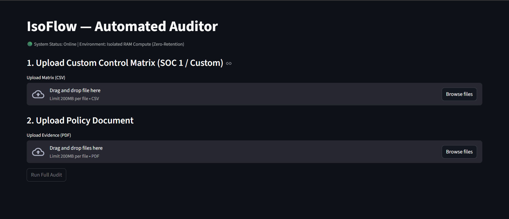
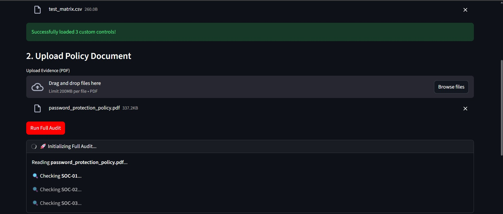
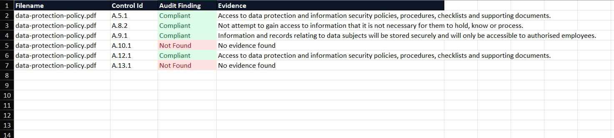

Manual evidence mapping is where most teams get stuck. IsoFlow turns your policies and audit docs into audit-ready evidence instantly.
94 pages → structured SOC2 evidence in 12 seconds
No data stored. No setup. No commitment.
Visually verify exactly what the orchestration layer produces.

Upload your document securely

The engine cross-references custom matrices, extracting exact text citations in seconds.

Download the finalized, color-coded audit trail ready for direct client submission.
Built to pass strict vendor risk assessments.
Your data is never stored — everything is processed and deleted instantly Session data is instantly destroyed upon Excel export. No databases, no logs.
Evidence is encrypted in transit. We act as a stateless processor, not a storage facility for your sensitive client data.
Your proprietary policies are strictly isolated. We use zero-retention enterprise APIs; your data is never used to train LLMs.
Auditor-verifiable technical specifications.
| Metric | Manual Auditor | IsoFlow AI |
|---|---|---|
| Speed (Per Policy) | 1-3 Hours | 15 Seconds |
| Extraction | Prone to fatigue & skipping | 100% Verbatim guarantees |
| Cost (Per Client) | $150+/hr billable time | Included in flat setup |
| Output Format | Messy manual spreadsheets | Enterprise color-coded Excel |
Ingests .PDF, .DOCX, and .TXT files (up to 200MB per file). Upload custom control matrices via .CSV.
IsoFlow is a standalone utility. We deliberately do NOT connect to your Google Drive, AWS, or Vanta environments to ensure a perfectly stateless, zero-risk airgap.
Not just ISO 27001. Upload your own unique SOC 1, SOC 2, or custom vendor-risk matrices and map evidence against them instantly.
A strict 3-step pipeline to prevent hallucination and guarantee compliance formatting.
Raw Policy PDFs
Encrypted in motion
RAM-only mapping on GCP
Session destroyed instantly
Drag and drop your policy or audit file
IsoFlow maps your document to SOC2/ISO controls automatically
Export structured Excel ready for audit submission
Automated onboarding. No manual sales calls required.
Typical manual mapping: 4–8 hours per audit IsoFlow: seconds
Complete the secure checkout via Tally & Stripe.
Your dedicated, isolated ephemeral workspace is provisioned automatically.
Log in immediately and begin mapping your policies.
Upload 1 document and get audit-ready output instantly.
Try with your own documentAll document processing occurs entirely in volatile RAM on Google Cloud (GCP) environments. The moment your Excel report is generated, the session is terminated and all memory is purged.
We utilize zero-retention enterprise tier APIs (including Google Gemini Enterprise and Anthropic), operating under strict Data Processing Agreements (DPAs) that legally prohibit your data from being used for model training.
We orchestrate the AI to return *only* verbatim quotes. If the control requirement is not explicitly found in the text, the system defaults to a safe "Not Found / Manual Review" status to prevent hallucinations.
Customers receive 24-hour direct engineering support via email or Slack. Because you are dealing directly with the system architects, technical issues are resolved immediately without going through tier-1 support bots.
Full Stack Engineer specializing in compliance automation
Prior to IsoFlow, I built highly secure enterprise backend systems using Spring Boot and distributed architectures. I got tired of watching compliance teams waste thousands of billable hours manually mapping PDFs to spreadsheets. I built this engine to be the exact stateless utility I wished existed—fast, strictly formatted, and paranoid about data privacy.
View LinkedIn Profile